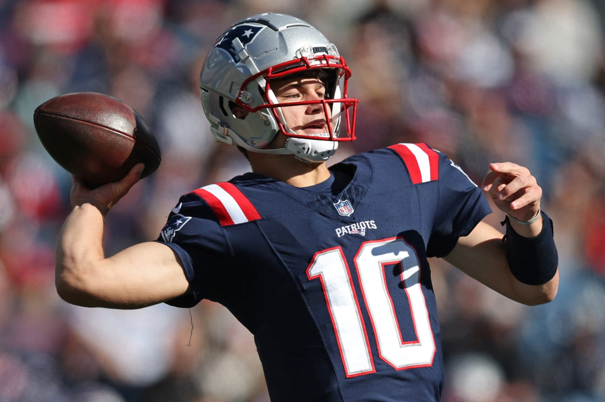

Welcome to an introduction page about Drake Maye, the promising young quarterback. He played college football for the North Carolina Tar Heels and was a sought after prospect in the NFL Draft.
Maye had an incredible run at UNC, showcasing his strong arm and mobility. He became known for his accurate passing and ability to extend plays outside the pocket.
The Maye family has a deep history in UNC sports. Drake's father, Mark Maye, played quarterback for the Tar Heels, and his brothers also excelled in basketball.